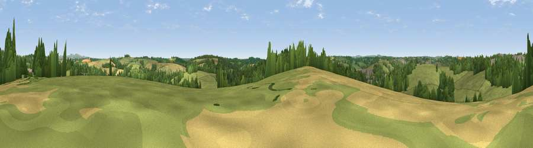

Viewpoint near St. Clement
#33817 in England · top 67% of its area beats it · near St. ClementThe view, rendered

A 360° render of this exact spot computed from the terrain model, tree cover and land cover — summer colours, afternoon light, calibrated against photographs of famous viewpoints. Real trees, hedges and buildings will differ in detail.
The panorama
Grey silhouette: terrain skyline in each direction (720 bearings, Earth curvature and refraction included). Dashed green: skyline with trees (+15 m) and buildings (+8 m) as obstacles. Blue strip: how far the ground is visible on each bearing.
Where the view opens
Wedge length = distance to the farthest visible ground on that bearing (vegetation-aware). Rings at 10, 25 and 50 km.
What fills the view
57% grassland · 28% woodland · 11% cropland · 4% built-up
Angular shares of the visible panorama (visual magnitude), not map area. Landscape diversity 0.46 (0–1 Shannon).
Key numbers
More beautiful places nearby
The staircase of upgrades: each row has a higher view potential than everything closer. Driving times are estimates from straight-line distance, calibrated against real road routing — check an actual route before setting out.
| Place | Direction | Drive | Score |
|---|---|---|---|
| Viewpoint near Malpas | SSW · 1 km | ~2 min | 43.0 |
| Viewpoint near Tresillian | N · 2 km | ~5 min | 44.1 |
| Porth Kea Hill | SSW · 3 km | ~7 min | 47.2 |
| Viewpoint near Tresillian | NNE · 3 km | ~7 min | 49.3 |
| Viewpoint near St. Michael Penkevil | ESE · 3 km | ~8 min | 50.0 |
| Viewpoint near Ruan Lanihorne | ESE · 4 km | ~10 min | 51.0 |
| Viewpoint near Feock | S · 6 km | ~13 min | 52.5 |
| Viewpoint near Trewithian | SE · 7 km | ~15 min | 61.8 |
50.25721, -5.02639 · source: screening · position refined by local search. Computed location — check access rights before visiting.